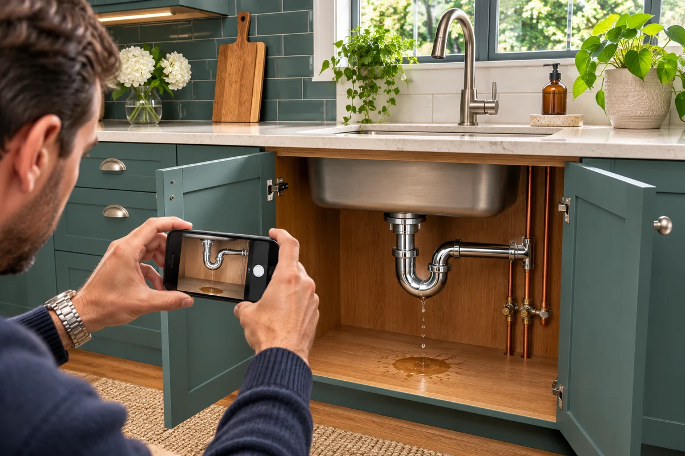
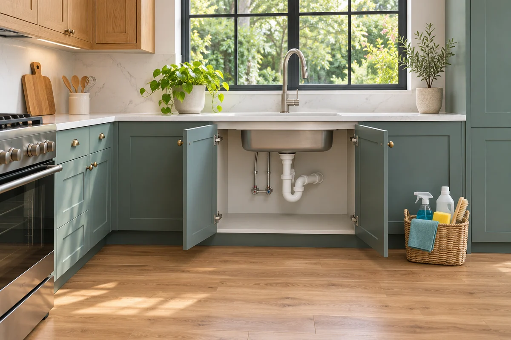

01 / OBSERVE
Describe what changed
Note which fixture is affected, when the issue started, and whether it happens every time. Photos of visible symptoms can help explain the situation.
FLOWLINE / THE ART OF EVERYDAY CARE
For the spaces you live in and the moments that matter. Plumbing solutions that bring comfort back to your everyday.
01 / Find your next step
START WITH THE SIGNS
Note where you see moisture. If safe, isolate the known water supply and request an assessment. Keep away from wet electrical equipment.
Explore pipe repair
02 / Applied expertise
A good assessment connects the symptoms to the source. We explain options in plain language, with respect for your property and your plans.
An assessment considers the visible issue, connected fixtures, and access to the pipework.
Review the proposed repair, suitable materials, and practical care advice before planning the next step.
03 / LOCAL SERVICE, CLEARLY DEFINED
Example coverage areas for template demonstration. A live business should replace these labels and confirm service eligibility before accepting requests.
04 / Featured solutions

The Flowline approach
Drain assessment helps distinguish an everyday blockage from a deeper issue. Choose the next step with better information.
Drain care
The Flowline approach
From replacing a fitting to improving a pipe run, start with the scope, access requirements and material choices.
Pipe repair05 / A LITTLE PREVENTION
Keep previous repair notes and describe any changes when arranging the next inspection.

06 / No guesswork
Access and diagnosis shape the work required.
Materials, labor and any extra charges are explained.
07 / BEFORE YOUR VISIT
Help your technician understand the problem and focus on the next practical step. Start with three simple things.
There is no need to dismantle anything or attempt an unfamiliar repair before the visit.

Note which fixture is affected, when the issue started, and whether it happens every time. Photos of visible symptoms can help explain the situation.

Clear a route to the affected fixture and keep the work area accessible. Leave concealed pipes, electrical equipment, and heavy appliances to the professional.
Have previous repair notes, product information, and questions ready. Discuss the assessment, estimate, and timing before agreeing to any work.

08 / THE PLUMBING JOURNAL
Know the warning signs, prepare for a service visit and develop a simple maintenance routine.
Record when a problem occurs and which fixtures are affected. Clear observations make a service conversation more useful.
09 / THE HOME CARE EDIT
A simple rhythm for looking after the plumbing you rely on. Keep track of changes and know what to discuss at your next service visit.
Check accessible areas beneath sinks for drips, moisture or new marks. Note changes in familiar water flow or drainage.
Look at visible outdoor taps and pipe insulation. Ask a professional about weather protection suited to your property.
Save repair notes and product details together. Ask which checks and maintenance intervals your fixtures need.